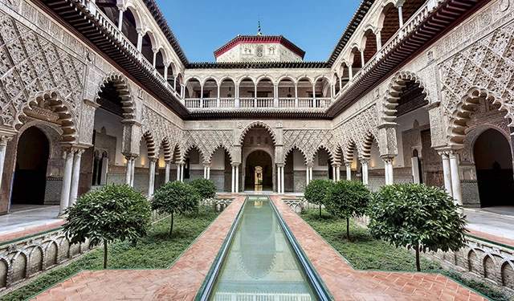
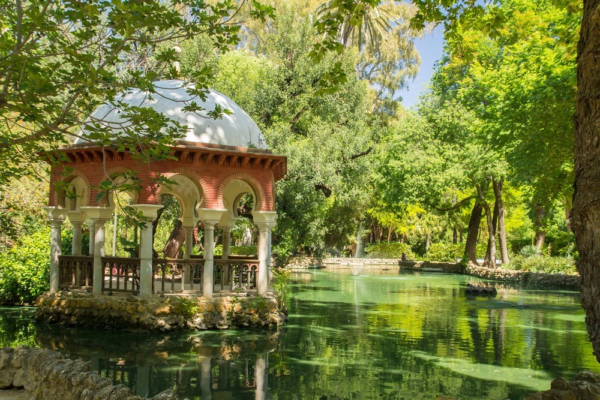
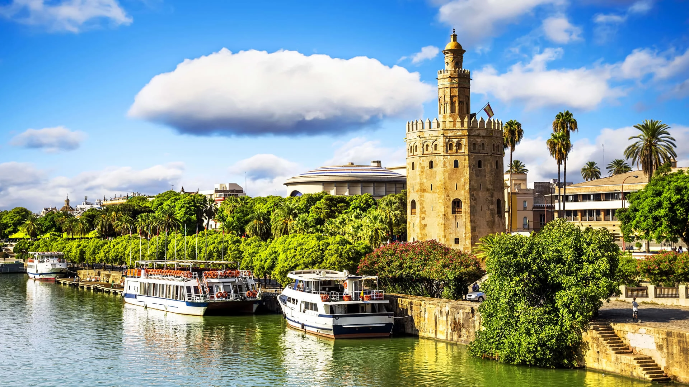

Que ver en Sevilla
Si quieres saber cómo recorrer la capital de Andalucía sin gastar un euro, échale un vistazo a qué ver gratis en Sevilla.
Si vas a pasar dos días en Sevilla o estás planeando quedarte unos cuantos más recorriendo los rincones pintorescos de la capital andaluza a un precio asequible, ¡sigue leyendo!
En la siguiente lista encontrarás los mejores museos y monumentos para visitar mientras te encuentras en Sevilla, de forma que aproveches al máximo tu visita en el sur de España.
- La Catedral de Sevilla y Giralda
Echa un vistazo a la espectacular Catedral de Sevilla y a la Giralda de forma gratuita. Hay disponibles 80 plazas todos los jueves no festivos con hora de entrada 14:45h., únicamente disponibles en venta ONLINE. Si no encuentras en el calendario plazas disponibles, es que se han agotado.
- Real Alcazar

Este lugar declarado Patrimonio de la Humanidad también se puede visitar gratuitamente los lunes. De abril a septiembre la entrada gratuita, de 18:00 a 19:00 horas, y de octubre a marzo, de 16:00 a 17:00 horas. Recuerda conservar tu ticket, ya que garantiza la entrada gratuita al Anticuario del Parasol Metropol y al Centro de Cerámica de Triana.
- Archivo de Indias
Situado cerca de la Catedral, el Archivo de Indias permite la entrada gratuita a los turistas durante todo el año. Está abierto de martes a sábado de 9.30 a 17.00 horas; domingos y festivos de 10:00 a 14:00 horas.
- Plaza de España y Parque de Maria Luisa

El parque más grande de la ciudad y la magnífica Plaza de España, donde se han rodado innumerables películas y series de televisión, están abiertos de forma gratuita durante todo el año hasta las 22:00 horas de noviembre a marzo y hasta la medianoche de abril a octubre.
- Torre del Oro

La famosa torre sevillana del siglo XIII abre sus puertas de forma gratuita el lunes, de 9:30 a 18:45. Para reservas para grupos, tendrás que concretar la hora rellenando este formulario.